Kibana Guide: Metric, Gauge and Table
|
This content was generated with the assistance of AI and should be verified against the official documentation before being relied on in production. |
Checked on 2026-11-11 against Kibana 9.5.x.
What you build
You add three Lens panels to the dashboard Bookshelf (guides). A metric shows the number of log records, with the error ratio as a secondary metric, a badge and a trend behind the number. A gauge shows the error ratio between zero and ten percent, coloured green, yellow or red by ranges. A table lists the requests for each URI with the number of records, the errors and the error ratio, sorted, with coloured cells and a summary row.
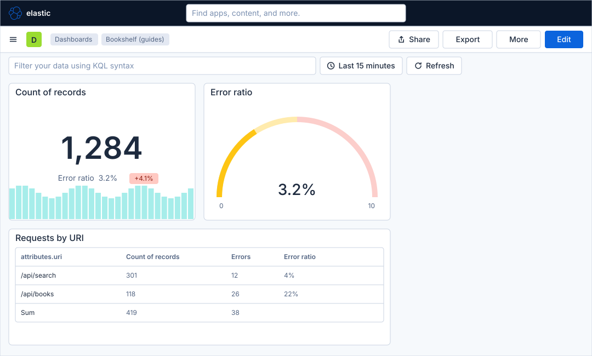
Before you start
-
Start the Kibana profile of the hands-on lab and wait about a minute:
cd lab docker compose --profile kibana up -d -
Open http://localhost:5601 and sign in as
elasticwith the passwordlab-elastic-password. When Kibana opens its full-screen welcome page, click Explore on my own. -
Do the guide Create a dashboard and the first Lens panel, which creates the dashboard Bookshelf (guides), ideally also the previous guide, Time series charts in Lens, which explains the formulas used here. The data view Bookshelf logs (guides) has the index pattern
logs-generic.otel-defaultand the time field@timestamp. -
The load generator must run in its default mode, which fills the log data stream. Lens and dashboards need no licence beyond the basic one; the lab runs a trial licence anyway.
-
The guide was checked on Elasticsearch and Kibana 9.5.6. The figures are drawings of the Kibana 9.5 user interface, not screenshots, so small details can differ from your screen, and the numbers in the panels are only illustrations. A highlighted box with a number marks the control of the step with the same number. The chart type menu, the zones of the Metric, Gauge and Table layers and the dimension editors were not all opened one by one in the lab for this guide; the figures show them in general form and the steps name the controls without describing their exact layout.
Steps
The Lens editor is the one of the first guide: the field list at the left, the workspace in the middle and the configuration panel at the right. Its map is in Create a dashboard and the first Lens panel. For a Metric, a Gauge or a Table the layer has other zones than the axes, as the figures show.
Open Lens and choose Metric
-
Open the primary navigation with the menu button, click Dashboards under Analytics, and click Bookshelf (guides).
-
Click Edit in the second bar.
-
Click Add in the second bar.
-
In the Add to dashboard flyout, click Visualization.
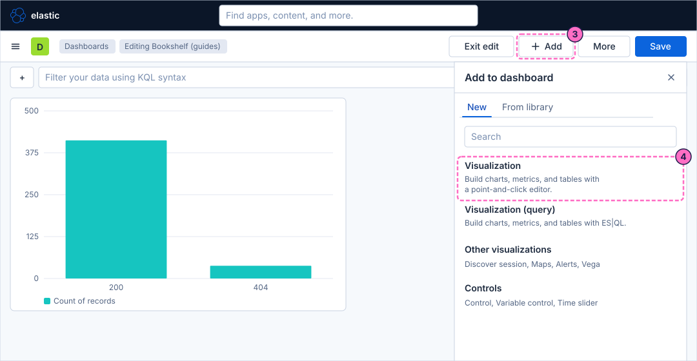
-
Lens opens with an empty workspace. Click the chart type button of the layer, which shows Bar, and choose Metric.
Build a metric with a secondary metric
-
Drag the entry Records, above Available fields, onto the dashed Primary metric button. Lens shows the number of records of the time range as a big number.
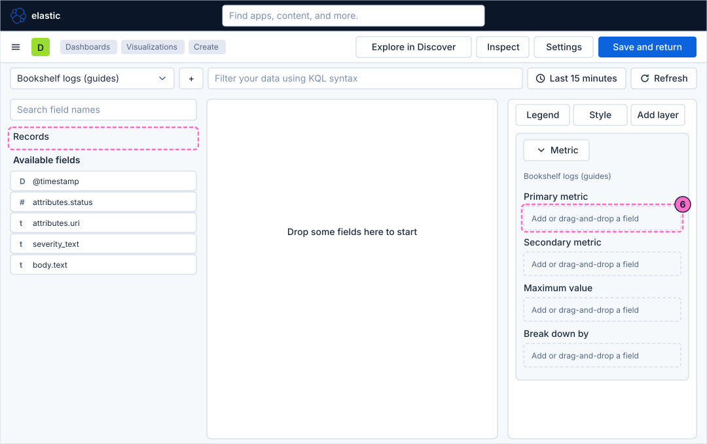
-
Click the dashed Secondary metric button, open the Formula tab of its editor and type the formula that divides the records with the severity
ERRORby all the records:count(kql='severity_text : "ERROR"') / count() -
Type
Error ratioin the name control of the editor, so that the panel shows that label instead of the formula. -
Set the Value format control to
Percent, so that Lens shows3.2%instead of0.032. -
Turn on the trend badge of the secondary metric. The badge is a small coloured label that compares the secondary metric with another value.
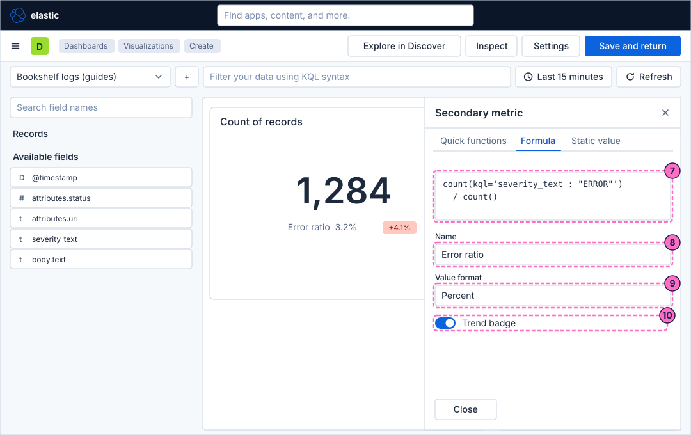
-
Close the editor, click the Primary metric entry to open its editor, and set the Background chart to a trend. Lens draws the evolution of the number behind it, which needs the time field of the data view.
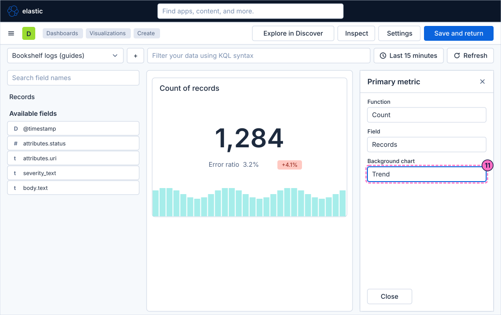
-
Close the editor and click Save and return in the second bar.
Build a gauge with ranges
-
Back on the dashboard, click Add and then Visualization.
-
Click the chart type button of the layer, which shows Bar, and choose Gauge.
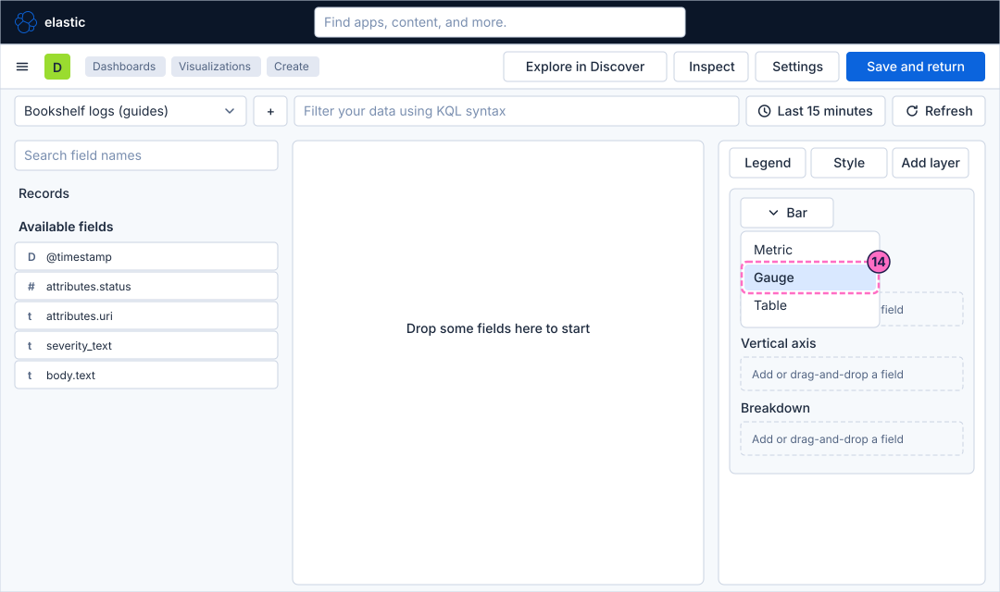
-
Click the dashed Metric button, open the Formula tab and type the same formula as in the metric. Name it
Error ratioand set its Value format toPercent, as in the steps 8 and 9. -
Click the dashed Maximum value button, open its Static value tab and type
0.1, so that the gauge goes from zero to ten percent.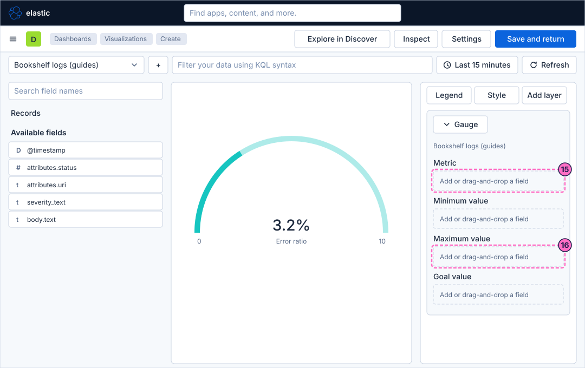
-
Click the Metric entry to open its editor.
-
Set the colour to follow the value, and type the three ranges, each with its colour:
From To Color 00.02green
0.020.05yellow
0.050.1red
The needle stays in the green band up to two percent of errors, in the yellow band up to five percent and in the red band above.
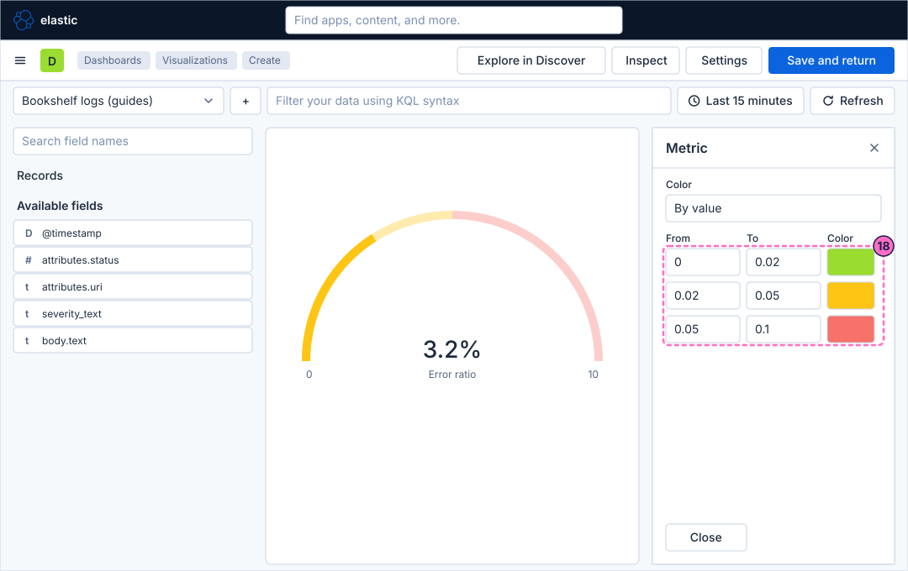
-
Close the editor and click Save and return.
Build a table with several metrics
-
Click Add and then Visualization once more.
-
Click the chart type button of the layer and choose Table.
-
Drag the field
attributes.urionto the dashed Rows button. Each URI becomes one row. -
Drag the entry Records onto the dashed Metrics button. The table gets a column Count of records.
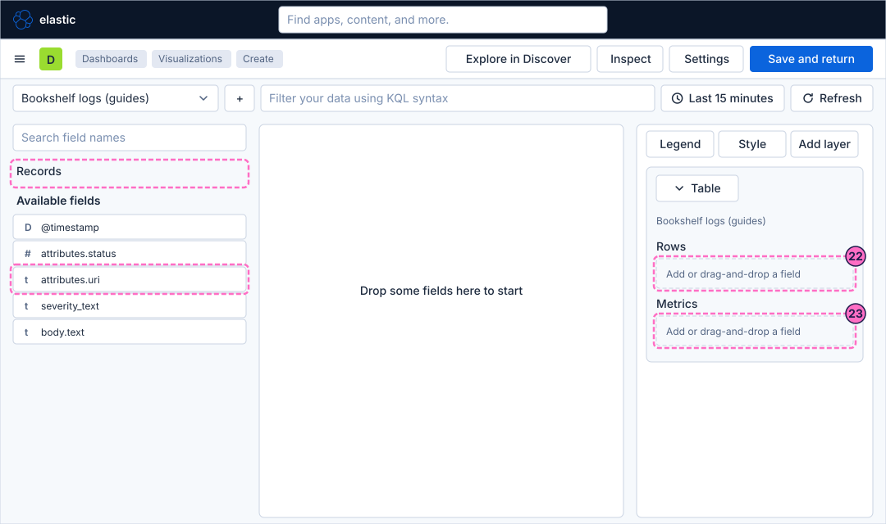
-
Click the dashed button below Count of records, open the Formula tab and type the formula of the failed records:
count(kql='severity_text : "ERROR"') -
Type
Errorsin the name control of the editor and close it. -
Click the dashed button below the new entry, open the Formula tab and type the formula of the ratio:
count(kql='severity_text : "ERROR"') / count() -
Type
Error ratioin the name control and set the Value format toPercent.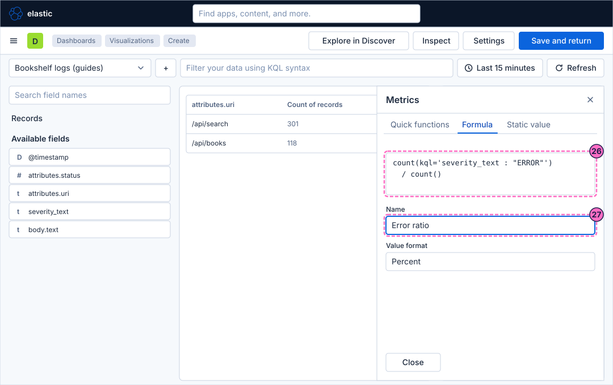
-
Close the editor. Click the header of the column Error ratio in the table preview and choose the option that sorts it in descending order, so that the URI with the most errors comes first.
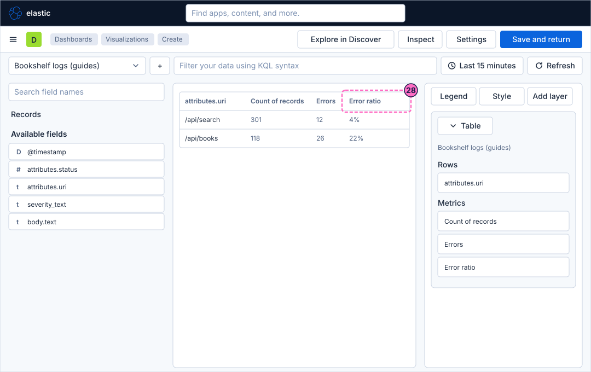
-
Click the Error ratio entry and set Color by value to colour the cells, so that a high ratio stands out.
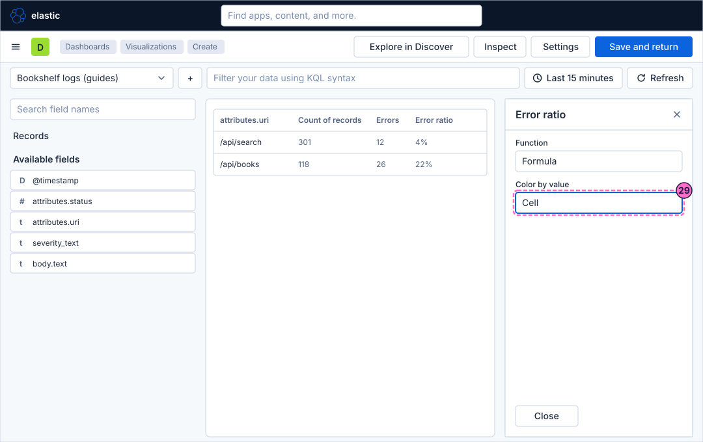
-
Close the editor, click the Errors entry and set its Summary row to
Sum. The table gets a last row with the total of the column. -
Close the editor and click Save and return.
-
Back on the dashboard, click Save in the second bar.
-
Click Exit edit.
Check the result
Open Dashboards and then Bookshelf (guides). It must show the metric with the error ratio below the number, the gauge and the table. In the normal mode the error ratio is close to 0%, so the needle of the gauge is in the green band.
To see the three panels react, force errors and press Refresh:
curl -X POST localhost:8090/mode/failingWithin about a minute the error ratio of the metric rises, the needle of the gauge moves into the yellow or the red band and the cells of the table change colour. Restore normal traffic afterwards:
curl -X POST localhost:8090/mode/normalVariations
-
Break the metric down by
attributes.uriwith Break down by, to get one metric for each URI. -
Add the field
severity_textto the Rows of the table, as a second row field, to split each URI by severity. -
Set a goal value in the gauge to mark the level you want to reach.
What can go wrong
| Symptom | Cause | Fix |
|---|---|---|
The metric shows no trend in the background |
The background chart needs the time field of the data view, or the time picker covers too few points. |
Use a data view with the time field |
The formula shows a red error |
A function name or a quote is mistyped. |
Retype the formula with the quotes as shown. |
The gauge is empty or full |
The maximum value does not match the metric: the metric is a ratio between |
Set the maximum to |
The table has a column with the formula as its title |
The entry has no name. |
Type the name in the editor of the entry. |
The summary row is missing |
The summary row is set per column, and the column has none. |
Open the entry of the column and choose the function of the summary row. |
Clean up
Keep the dashboard and the panels: the following guides in this series extend it. Stopping the profile with docker compose --profile kibana down -v deletes the volumes and therefore the dashboard.
Where to go next
-
Previous guide: Time series charts in Lens.
-
Next guide: Proportion and distribution charts, which draws shares and distributions with the same data.
-
Reference: Lens covers the editor, its chart types and its functions in full.